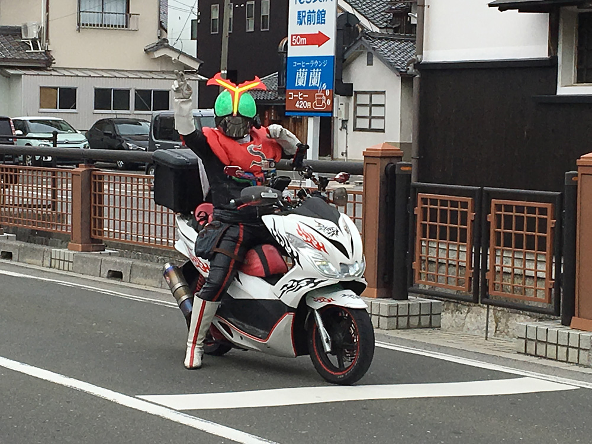

舞武櫻の歴史
-
2018年11月17日
大人の遠足「伊勢えび」催行。隣の部屋のカラオケを楽しみつつ食事。温泉もついている施設で、食後のお風呂も楽しめる。帰りは近鉄電車の観光特急しまかぜでマッサージ付きプレミアムシートに癒される。
-
2018年09月22日
イオンモールKYOTOの肉村こと「NICK STOCK」で懇親会。ビアガーデンプランでお酒とお肉を満喫。
-
2018年03月03日

大人の遠足「長浜の旅」催行。長浜盆梅展で盆栽の梅を鑑賞→料亭「琵琶湖畔 浜湖月」で近江牛メインの料理に舌鼓→黒壁スクエア観光中に仮面ライダーに出会う。
-
2015年03月22日
大人の遠足「フグ」催行。
-
2014年01月26日
大人の遠足「牡蠣ツアー in 赤穂」の道中、殺陣エクササイズチームの名前が決まる。殺陣エクササイズを表現する言葉を探す中で、「濁点が欲しい」という意見から京都のぶぶ漬けに着想を得て「舞武（ぶぶ）」。「花の名前も入れたい」という意見から「桜」が決まり、画数のバランスを考えて「櫻」。メンバーの意見を集約した結果「舞武櫻（ぶぶざくら）」と命名された。
-
2012年10月28日
大人の遠足「クエ in 和歌山」催行。